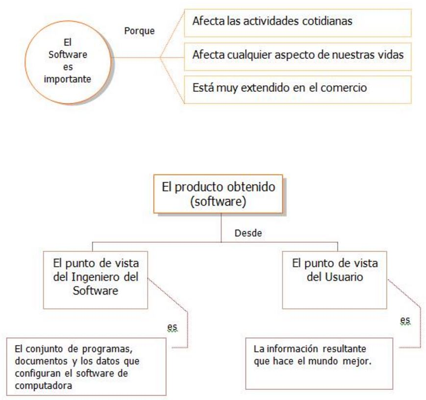

Introduccion al Desarrolo de Software - UNAD CALI
Capítulo 1. El Producto
El software y la Ingeniería de software
Actualmente, el software ha superado al hardware como la clave del éxito de muchos sistemas basados en computadoras. Tanto si se utiliza la computadora para llevar un negocio, controlar un producto o capacitar un sistema, el software es el factor que marca la diferencia. Lo que diferencia a una compañía de su competidora es la suficiencia y la oportunidad de la información dada por el software.
La importancia del Software
Durante las tres primeras décadas de la informática, el principal desafío era el desarrollo del hardware de las computadoras, de forma que se redujera el costo de procesamiento y almacenamiento de datos. Hoy el problema es diferente, el principal desafío es mejorar la calidad (y reducir el coste) de las soluciones basadas en computadoras - soluciones que se implementan con el software. El software es el mecanismo que nos facilita utilizar y explotar las enormes capacidades de procesamiento y almacenamiento del hardware moderno.

Evolución del Software
El contexto en que se ha desarrollado el software está fuertemente ligado a las casi cinco décadas de evolución de los sistemas informáticos. Un mejor rendimiento del hardware, una reducción del tamaño y un coste más bajo, han dado lugar a sistemas informáticos más sofisticados.
A continuación se describire la evolución del Software dentro del contexto de las áreas de aplicación de los sistemas basados en computadoras.
Los primeros años (1950 - 1965):
• El software estaba en su infancia
• El software era un añadido
• Existían pocos métodos para la programación
• No se tenia una planificación para el desarrollo del software
• Los programadores trataban de hacer las cosas bien
• El software se diseñaba a medida
• El software era desarrollado y utilizado por la misma persona u organización (entorno perzonalizado)
• El diseño de software era realizado en la mente de alguien y no existía documentación
La segunda era (1965 - 1975):
• Multiprogramación y sistemas multiusuarios introducen nuevos conceptos de interacción hombre-máquina.
• Sistemas de tiempo real que podían recoger, analizar y transformar datos de múltiples fuentes.
• Avances en los dispositivos de almacenamiento en línea condujeron a la primera generación de sistemas de gestión de Base de Datos.
• Software como producto y la llegada de las "casas de software" produciéndose así una amplia distribución en el mercado.
• El software se desarrollaba para ser comercializado
• Se empezó a distribuir software para grandes computadoras y minicomputadores
• Comenzó una crisis del software porque la naturaleza personalizada de los programas hizo imposible su mantenimiento.
La segunda era (1965 - 1975):
• Multiprogramación y sistemas multiusuarios introducen nuevos conceptos de interacción hombre-máquina.
• Sistemas de tiempo real que podían recoger, analizar y transformar datos de múltiples fuentes.
• Avances en los dispositivos de almacenamiento en línea condujeron a la primera generación de sistemas de gestión de Base de Datos.
• Software como producto y la llegada de las "casas de software" produciéndose así una amplia distribución en el mercado.
• El software se desarrollaba para ser comercializado
• Se empezó a distribuir software para grandes computadoras y minicomputadores
• El mantenimiento de software comenzó a absorber recursos en una gran medida.
Comenzó una crisis del software porque la naturaleza personalizada de los programas hizo imposible su mantenimiento.
Conforme crecía el número de sistemas informáticos, comenzaron a extenderse las bibliotecas de software de computadora. Las casas desarrollaban proyectos en que se producían programas de decenas de miles de sentencias fuente. Los productos de software comprados en el exterior incorporaban cientos de miles de nuevas sentencias. Una nube negra apareció en el horizonte. Todos estos programas tenían que ser corregidos cuando se detectaban fallos, modificados cuando cambiaban los requisitos de los usuarios o adaptados a nuevos dispositivos de hardware que se hubiera adquirido. Estas actividades se llamaron colectivamente mantenimiento del software.
La tercera era (1975 - 1985):
• Procesamiento Distribuido. Múltiple computadoras, cada una ejecutando funciones concurrentes y comunicándose con alguna otra.
• Redes de área local y de área global. Comunicaciones digitales de alto ancho de banda y la creciente demanda de acceso "instantáneo" a los datos.
• Amplio uso de microprocesadores y computadoras personales (hardware de bajo costo). Incorporación de "inteligencia" (autos, hornos de microondas, robots industriales y equipos de diagnóstico de suero sanguíneo). Impacto en el consumo.
• Planificación en el proceso del desarrollo de software.
La cuarta era (1985 -2000):
• Tecnología orientada a objetos
• Los sistemas expertos y la inteligencia artificial se han trasladado del laboratorio a las aplicaciones prácticas.
• Software para redes neuronales artificiales (simulación de procesamiento de información al estilo de como lo hacen los humanos).
• Impacto colectivo del software
• Sistemas operativos operativos sofisticados , en redes globales y locales
• Aplicaciones de software avanzadas
• Entorno cliente/cliente servidor
• Superautopista de información y una conexión del ciberespacio
• La industria del software es la cuna de la economía
• Técnicas de cuarta generación para el desarrollo de software
• Programación de realidad virtual y sistemas multimedia
• Algoritmos genéticos
• Adopción de prácticas de Ingeniería del software
Software:
La descripción de software en un libro de texto podría tomar la forma siguiente:
(1) instrucciones que cuando se ejecutan proporcionan la función y el rendimiento deseados,
(2) estructuras de datos que permiten a los programas manipular adecuadamente la información, y
(3) documentos que describen la operación y el uso de programas.
Pero, el software se ha convertido en el elemento clave de la evolución de los sistemas y productos informáticos, y por tal razón no se puede tomar como sólo el conjunto de programas, instrucciones y estructuras de datos.
El software se ha convertido en algo fundamental para la sociedad. Es el motor que conduce a la toma de decisiones comerciales. Sirve como la base de investigación científica moderna y de resolución de problemas de ingeniería. Es el factor clave que diferencia los productos y servicios modernos. Está inmerso en sistemas de todo tipo: de transportes, médicos, de telecomunicaciones, militares, procesos industriales, entretenimiento, productos de oficina, etc. El software será el que nos lleve de la mano en los avances en todo desde la educación elemental a la Ingeniería Genética.
Características del software
Para poder comprender lo que es el software y consecuentemente la ingeniería del software, es importante examinar las características del software que lo diferencian de otras cosas que los hombres pueden construir. El software es un elemento del sistema que es lógico, en lugar de físico. Por tanto, el software tiene unas características considerablemente distintas a las del hardware:
• El software se desarrolla, no se fabrica en un sentido clásico: se utiliza un modelo de proceso de desarrollo que comprende análisis, diseño, desarrollo, implementación y evaluación para obtener un producto de calidad.
• El software no se "estropea", pero se deteriora: El software durante su vida sufre cambios por lo que es probable que surjan fallos y defectos que si no se corrigen permiten que el software se vaya deteriorando.
• La mayoría del software se construye a medida, en vez de ensamblar componentes existentes: a medida que el software evoluciona se crean estádares de diseño.
• La reusabilidad es una característica importante para un componente de software de alta calidad. Es decir, el componente debe diseñarse e implementarse para que pueda volver a usarse en muchos programas diferentes.
Aplicaciones del software
Para determinar la naturaleza de una aplicación de software, hay dos factores importantes que se deben considerar: el contenido y el determinístico de la información. El contenido se refiere al significado y a la forma de la información de entrada y salida. El determinístico de la información se refiere a la predecibilidad del orden y del tiempo de llegada de los datos.
Las siguientes áreas del software indican una amplitud de las posibilidades de aplicación.
• Software de sistemas. Es un conjunto de programas que han sido escritos para servir a otros programas. Por ejemplo, compiladores, sistemas operativos.
• Software de tiempo real. Es el software que mide/analiza/controla sucesos del mundo real conforme ocurren.
• Software de gestión. Gestión de grandes cantidades de información almacenadas, para facilitar la toma de decisiones. Constituye la mayor área de aplicación del software. Los sistemas "discretos" (ejemplo: nóminas, cuentas de haberes/débitos, inventarios, etc.) han evolucionado hacia el software de sistemas de información de gestión (SIG), que acceden a una o más bases de datos grande que contienen información comercial.
• Software de ingeniería y científico. Utiliza algoritmos de manejo de números, simulación de sistemas, utiliza software en tiempo real. Por ejemplo: aplicaciones de astronomía, vulcanología, fabricación automática.
• Software empotrado. Reside en la memoria de sólo lectura y se utiliza para controlar productos y sistemas de los mercados industriales y de consumo. Por ejemplo, el control de las teclas de un horno de microondas, funciones digitales en un automóvil.
• Software de computadoras personales. Aplicaciones orientadas a usuarios individuales o multiusuarios. Por ejemplo: procesadores de texto, hojas de cálculo, juegos, aplicaciones financieras, gestores de bases de datos.
• Software de inteligencia artificial. Hace uso de algoritmos no numéricos para resolver problemas complejos para los que no son adecuados el cálculo o el análisis directo. Actualmente el área más activa es la de los sistemas expertos o sistemas basados en el conocimiento.
Software una crisis en el horizonte
el volumen cada vez mayor de software existente y cómo poder esperar mantenernos al corriente de la demanda creciente de software.
Problemas
Los problemas que afligen el desarrollo del software se pueden caracterizar bajo muchas perspectivas, pero los responsables de los desarrollos de software se centran sobre los aspectos de "fondo":
1. la planificación y estimación de los costes son frecuentemente imprecisas;
2. la "productividad" de la comunidad del software no se corresponde a la demanda de sus servicios, y
3. la calidad del software no llega a ser a veces ni aceptable.
Tales problemas son sólo las manifestaciones más visibles de otras dificultades del software:
• No se tiene tiempo para recoger los datos sobre el proceso de desarrollo del software.
• La insatisfacción del cliente del sistema "terminado" se produce demasiado frecuente.
• La calidad del software es normalmente cuestionable.
• El software existente puede ser muy difícil de mantener.
Causas
Los problemas asociados con la crisis del software se han producido por el propio carácter del software y por los errores de las personas encargadas del desarrollo del mismo.
Los trabajadores del software (en la pasada generación se llamaban programadores; en esta generación se ganará el título de ingenieros del software) han tenido muy poco entrenamiento formal en las nuevas técnicas de desarrollo de software. Cada individuo enfoca su tarea de "escribir programas" con la experiencia obtenida en trabajos anteriores. Algunas personas desarrollan un método ordenado y eficiente de desarrollo del software mediante prueba y error, pero muchos otros desarrollan malos hábitos que dan como resultado una pobre calidad y mantenibilidad del software.
Mitos del Software
Los mitos de software propagaron información errónea y confusión, lo que conllevo a la crisis del software durante los primeros años del desarrollo del software.
Mitos de Gestión
• Tenemos ya un libro que está lleno de estándares y procedimientos para construir software, ¿no le proporciona ya a mi gente todo lo que necesita saber?
• Mi gente dispone de las herramientas de desarrollo de software más avanzadas, después de todo, les compramos las computadoras más modernas.
• Si fallamos en la planificación, podemos añadir más programadores y adelantar el tiempo perdido.
Mitos del Cliente
• Una declaración general de los objetivos es suficiente para comenzar a escribir los programas.
• Los requisitos del proyecto cambian continuamente, pero los cambios pueden acomodarse fácilmente, ya que el software es flexible.
Mitos de los Desarrolladores
• Una vez que escribimos el programa y hacemos que funcione, nuestro trabajo ha terminado.
• Hasta que no tengo el programa "ejecutándose", realmente no tengo forma de comprobar su calidad.
• Lo único que se entrega al terminar el proyecto es el programa funcionando.